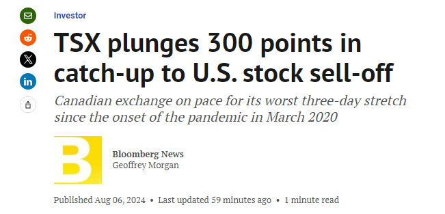
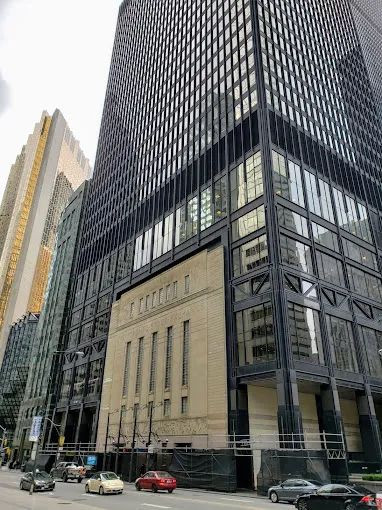

今天（周二），加拿大股市受到了全球抛售浪潮的影响。就在昨天（周一），全球主要股指受到了重大冲击！

周一，加拿大股市因长周末休市，意味着直到今天才赶上全球抛售浪潮，本周初全球股市继续受到冲击！
今天，多伦多开盘时，标普/多伦多证券交易所综合指数下跌2.6%，连续第三个交易日下跌。226只成分股中只有6只股票上涨，因为所有板块均下跌。
自2020年3月疫情爆发以来，加拿大股市基准指数有望创下最糟糕的三天连跌纪录。

图源：Google
上周五，美国公布的疲软就业数据引发了交易困境，人们再次担心经济陷入衰退。科技股在抛售中受到的打击尤其严重。
标普500指数和纳斯达克综合指数在上一交易日都下跌了至少3%。
虽然加拿大股市下跌，但其他市场已经出现了复苏的迹象。华尔街主要指数今天在波动交易中上涨，同时美联储官员的鸽派利率言论也提振了市场的情绪。
大多数大型股和成长股周一市值缩水$2000亿美元，但随着英伟达（Nvidia）反弹了2.3%，这些股票也均有所上涨。此外，苹果下跌1.9%，延续了周一近5%的跌幅。
昨天，日经指数暴跌12.4%，创下1987年黑色星期一股市崩盘以来的最大跌幅。